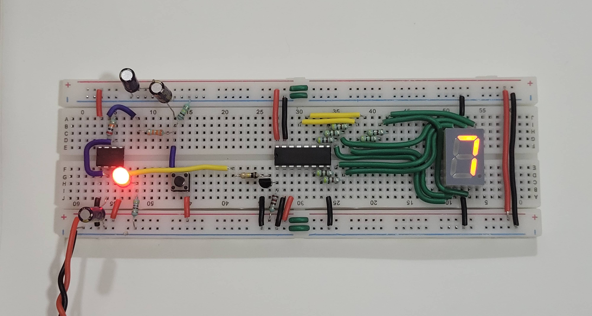
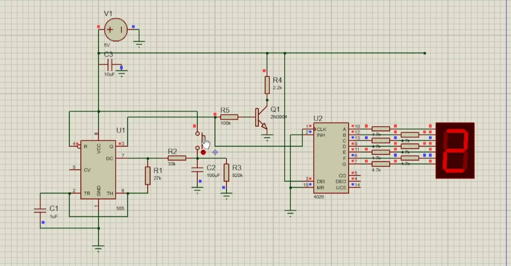

11.10.25
While browsing YouTube today I came across some SolidWorks videos in my recommended partly because yesterday after a long time I revisited my CAD itch. While watching some of them (one of them was a CAD 1v1 contest!) a video on a 4-cylinder engine popped up. When I saw the pistons moving in the preview, I knew I'd spend the next three hours modeling it myself. This was the blueprint that was shown at the beginning of the video:

I first had to model the individual parts of the engine (piston head, connecting rod, rod cap, crankshaft, etc). After modeling every part, the next step is assembling all the parts into an assembly.
Three hours in, I finally made it.

Time to rotate the crankshaft and see the engine come to life!
Nice! It would be better if the schematic also included parts of the engine head (camshaft, valves, etc). Nonetheless, I had fun making it; maybe I'll measure out and model the head parts myself.
02.11.25
For my end semester DE/AC project, I chose to make a simple number guessing game using nothing but a few primitive ICs.

Hold the "roll" button to roll numbers 0-9 on the 7-segment display. When released, the counter starts slowing down until it lands on a number that the user needs to guess. Here it is in action:
Here are few of the components I used:
- 555 Timer: used in astable mode -- sends clock pulses to the counter to count up at every tick.
- CD4026 (5-stage Johnson Decade Counter & Output Decoder): this IC does two things at once -- it counts up at every clock tick, looping to 0 when it gets to 9, and then decoding it into 7-bits for the 7-segment display to read.
- NPN transistor: acts as a buffer to cleanly supply clock ticks to the counter.
How does the frequency decay with time? When the button is pressed, the 100uF is shorted to Vcc and starts charging. Now when the button is released, it starts discharging through the 820K resistor; as the voltage on the capacitor decreases, the frequency of the clock pulses decrease until it reaches zero.
For completeness, here is the circuit diagram I made to verify the circuit before putting it on the breadboard:

20.10.25
'How Do Aircraft Systems Communicate?'. It's been a while since I got a Ben Eater video recommended in my YT feed. Aha! I totally forgot about designing my own 8-bit "Computer" back when I blazed through his breadboard computer videos!
After seeing his SAP-1 Simple As Possible computer come to life, I too wanted to learn how to make one on my own. Cut to today, when I once again revisited his videos -- and most importantly -- found another great resource for learning this stuff: Sebastian Lague. I followed him from his Ludum Dare days.
Lague's videos on his Logic Simulator were very well thought out and executed. Even though I knew most of what he explained from Eater, his "why" approach where he first comes up with the easiest solutions and refines it so as to make us understand the reasons better, were so satisfying to watch -- wish more teachers would teach students that way.
I wondered how much work would it take to recreate his Logic Simulator in C with SDL/raylib. So I setup a hello-world raylib project with a 2D camera and some zooming/panning. Tomorrow I'll work on the graphics side for a bit before starting on the main simulator code.
18.10.25
When I distro-hopped from Arch to NixOS about two months ago, for fun I also changed my WM from openbox to qtile. I last used a tiling WM about two years ago (dwm from suckless) and migrated to openbox then 'cuz I didn't appreciate the philosophy. I've now used qtile for about two months, and I'm going back to openbox.
Why? tmux. I mainly switched to qtile because I needed a quick way to position my terminals without having to use the mouse again and again. Now that I'm multiplexing terminals under a single window, I frankly have no use for a tiling WM any more.
Why didn't I use tmux before? I did. Roughly about ~3-4 years ago. I just dipped my toes in to see what's so special. But at that time I was using Emacs as my main editor and most of my workflow didn't require a separate terminal -- Emacs had it all (compiling, gitting, searching, etc). Now that I use vim (after a brief stunt using my own editor), I require 2-4 terminals at any time so using tmux is a no-brainer.
Of course, I also changed some things along with the WM. qtile had it's own status bar and openbox does not, so I reinstalled tint2. For notifications, I use dunst with notify-send (libnotify).
There is a subtle bug where when I download something from firefox and click the button to open the containing folder, it opens the terminal emulator, not the file manager (PCManFM). Yet when I start the file manager beforehand and then click the button in firefox, it correcly opens in it. I'll have to look into it.
14.10.25
To even begin reading Spivak's Calculus, I need to have a few prerequisites under my belt:
- Know Pre-algebra, Algebra, Trig, Pre-calculus. Every engineering student has done this at some point.
- Calc I, II, III on a surface level—just enough to solve problems, no proofs or derivations or anything. Recommended: Paul's Online Notes or Michel van Biezen's ~13hr YouTube playlist.
- Proof writing. Recommended: How to Prove It: A Structured Approach by Daniel J. Velleman
Currently I'm working on finishing the 2nd part. Even though I'm in Semester III in my college which involves Calc III, I feel like we weren't taught stuff properly, which is why I'm relying on Paul's notes to get basics of Calc 2 and 3 out of the way so that I can move on to step 3.
29.9.25
On the first few lessons from the Udemy piano course. Before this I could play melodies with single hand without movement. Now the first full lesson incorporates some bass notes too. What helped me was to individually practice both hands until I'm fairly confident that I could play them without thinking too much. Then after however many tries, playing with both hands should be much easier.
I'm also starting to get a hang of which notes are which on the keyboard. The accidentals are not yet introduced in the course, so I'm gonna hold off till later on that.
Pitch recognition by ear is tricky. Some say it's given to you by birth, while others assert it can be taught just like any other skill. I think it's a mix of both. All the "pitch perfect" musicians I've come across have done some music in their childhood, that helped them develop this "natural-born" talent gradually.
One of the ways pitch recognition can be done without being born with it, is to link a note with the first note of any song. For example, Hans Zimmer's No Time To Caution has a memorable A B C D melodic arrangement, which can be used to recognize other similar notes.
Also, about a week ago I came across a really cool vector calculus problem solution, thought I'd share it here:
$$\text{Prove that }\nabla^2 f(r) = \frac{d^2 f}{dr^2} + \frac{2}{r} \frac{df}{dr}$$Conventions used: \(\vec{r} = \) vector and \(r = \) magnitude of \(\vec{r}\).
$$\begin{align*} y &= \text{LHS}\\ &= \nabla^2 f(r)\\ &= \nabla \cdot \nabla(f(r))\\ &= \nabla \cdot [f'(r)\nabla(r)]\\ &= \nabla \cdot \left[f'(r)\frac{\vec{r}}{r}\right]\\ &= f'(r)\nabla \cdot \left[\frac{\vec{r}}{r}\right] + \frac{\vec{r}}{r}\cdot \nabla f'(r)\\ &= f'(r)\frac{r\nabla \cdot \vec{r} - \vec{r}\cdot \nabla r}{r^2} \\ &\quad+ \frac{\vec{r}}{r} \cdot \left( f''(r)\frac{\vec{r}}{r} \right) \end{align*}$$Same as the first step:
$$\begin{align*} y &= f'(r) \frac{r \cdot 3 - \vec{r} \cdot \frac{\vec{r}}{r}}{r^2} + \frac{r^2}{r^2} f''(r)\\ &= f'(r) \cdot 2 \frac{r}{r^2} + f''(r)\\ &= f''(r) + \frac{2}{r} f'(r)\\ &= \text{RHS} \end{align*}$$QED.